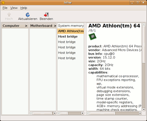

lshw
Dieser Artikel wurde für die folgenden Ubuntu-Versionen getestet:
Ubuntu 14.04 Trusty Tahr
Zum Verständnis dieses Artikels sind folgende Seiten hilfreich:
lshw  steht für list hardware und liefert Informationen zu Hardwarekomponenten wie CPU, Speichermodulen, die an PCI-, USB- oder IDE-Schnittstelle angeschlossenen Geräte wie Soundkarte, Grafikkarte oder Laufwerke usw. Siehe auch Gerätemanager und Systeminformationen ermitteln.
steht für list hardware und liefert Informationen zu Hardwarekomponenten wie CPU, Speichermodulen, die an PCI-, USB- oder IDE-Schnittstelle angeschlossenen Geräte wie Soundkarte, Grafikkarte oder Laufwerke usw. Siehe auch Gerätemanager und Systeminformationen ermitteln.
Installation¶
lshw ist normalerweise in der Standardinstallation enthalten, kann aber ansonsten über die Pakete
lshw
lshw-gtk, universe, für eine grafische Benutzeroberfläche
installiert werden [1].
Benutzung¶
Der Aufruf von lshw erfolgt im Terminal [2] mit folgendem Befehl:
lshw <Format> [Option]
Hinweis:
Ruft man das Programm lshw mit Root-Rechten auf, so erhält man deutlich detailliertere Informationen zu den einzelnen Komponenten.
Der Aufruf ohne Optionen und Formatangabe erzeugt eine relativ lange Ausgabe von Hardwareinformationen. lshw kennt die folgenden Optionen:
| Optionen für das Ausgabeformat | |
| Format | Beschreibung |
-html | Ausgabe inklusive HTML-Tags |
-xml | Ausgabe inklusive XML-Tags |
-short | stark verkürzte Ausgabe, enthält weniger Informationen |
-businfo | verkürzte Ausgabe, sortiert nach dem (Anschluss-) Bus |
Die Optionen -html und -xml sind dann besonders hilfreich, wenn man die Daten weiter benutzen möchte (z. B. Hardwaredatenbank für verschiedene Rechner).
| Optionen für die Informationsausgabe | |
| Option | Beschreibung |
-sanitize | Versteckt sensible Informationen (Seriennummern, IP-Adressen) |
-c, -C oder -class Klasse | Hardware einer bestimmten "Klasse" angezeigen. Eine Liste der mögliche Klassen liefert -businfo, z.Zt. sind das: system, processor, bus, bridge, memory, display, multimedia, network, storage, disk und volume. |
-disable Test | Ausschalten bestimmter Testverfahren = Standard |
-enable Test | Einschalten bestimmter Testverfahren, Details dazu in den Manpages. |
Beispiel mit gekürzter Ausgabe:
sudo lshw -businfo
Ergebnis-Beispiel (gekürzt):
Bus info Device Class Description
=====================================================
system Desktop Computer
pci@0000:04:06.0 multimedia CX23880/1/2/3 PCI Video and Audio Decoder
pci@0000:04:06.1 multimedia CX23880/1/2/3 PCI Video and Audio Decoder [Audio Port]
pci@0000:00:1f.0 bridge 82801GB/GR (ICH7 Family) LPC Interface Bridge
pci@0000:00:1f.1 scsi0 storage 82801G (ICH7 Family) IDE Controller
scsi@0:0.0.0 /dev/sda disk 160GB WDC WD1600AABB-0
scsi@0:0.0.0,4 /dev/sda1 volume 149GiB EXT3 volume
/dev/sda5 volume 95GiB Linux filesystem partition
Grafische Benutzeroberfläche¶
|  |
| Grafische Benutzeroberfläche |
Es gibt auch eine graphische Oberfläche für lshw. Diese kann über "System -> Hardware Lister" oder über den Aufruf von lshw-gtk gestartet werden [3]. Eine Alternative bietet das eigenständige Programm HardInfo.
Hinweis:
Für lshw wird u.U. kein Startmenüeintrag angelegt; diesen muss man bei Bedarf selber anlegen [4].
Die Ansicht besteht aus mehreren Spalten, in der rechten Spalte werden dabei die Hardwareinformationen angezeigt. Dazu muss man auf einen Eintrag in einer der linken Spalten klicken. Ist ein Eintrag in einer der linken Spalten fett dargestellt, so hat dieser weitere Untereinträge. Diese können durch einen Doppelklick auf den entsprechenden Eintrag eingeblendet und mit einem Einfachklick wieder ausgeblendet werden.
Ein Klick auf " Beenden" beendet das Programm.
Hinweis:
Ruft man lshw-gtk mit Root-Rechten auf, so erhält man deutlich detailliertere Informationen zu den einzelnen Komponenten.
 Übersichtsseite
Übersichtsseite- Erstellt mit Inyoka
-
 2004 – 2017 ubuntuusers.de • Einige Rechte vorbehalten
2004 – 2017 ubuntuusers.de • Einige Rechte vorbehalten
Lizenz • Kontakt • Datenschutz • Impressum • Serverstatus -
Serverhousing gespendet von